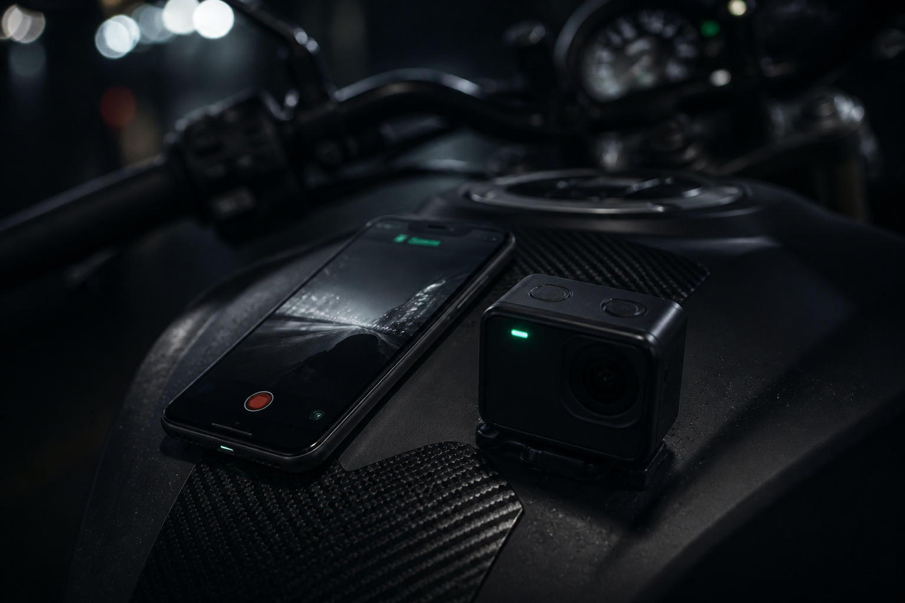

RiderLab · by RawThrottle · presentación completa
Every function
we ship to riders.
Street capture. Ride Lab. Friends and rodadas. Research labs. What is live, what is experimental, what is next.

Who · quién
A lab for people who actually ride.
Riders
Keep the line from last Sunday. See lean, speed, and where they braked — on the phone they already own.
Groups
Rodadas with an invite code. Meetup, photos, a quiet radio. Compare the same canyon with a friend.
Partners
Clubs, coaches, shops, camera and moto brands who want product in riders’ hands — not a slideware telemetry kit.
Android first · Spanish + English · Triumph-first garage for the current pilot group.
The problem · el problema
After the ride, the data is gone.
- 1 Track apps assume a loop and a transponder. Street riding is A to B, night, rain, a pocket.
- 2 Action cameras record video, not a line you can scrub for lean and brakes.
- 3 Clubs cannot coach what they cannot see. Brands cannot learn from a WhatsApp voice note.
RiderLab is the recorder + laboratory for that gap.
Capture · sensores
Three sensors. One ride file.
| Sensor | What we store |
|---|
| GPS | High-precision line, accuracy + Hz, warm-up to ~10 m |
| IMU lean | Left / right gauge from the phone. Portrait on tank or bars is the intended mount. |
| Barometer | Pressure (hPa) when the device has one |
A loose pocket will skew incline. We say that in the app. Lean Lab exists to measure that bias, not hide it.

How you start · cómo se graba
Tap Start — or arm and roll.
- Start Glove-sized button. GPS warm-up. Live map, speed, lean, pressure.
- Arm Background wait. Around 20 km/h and a short move, recording begins. Screen can stay locked.
- Pause Auto-pause when almost stopped; resume when you roll again. Optional “still riding?” after a long stop.
- Recover If the phone dies mid-ride, keep the line or discard it.
Offline SQLite on device. Cloud sync after stop — soft-fail, the ride stays on the phone.
Home garage · garaje
Your month of lines.
List distance · duration · max speed · peak lean
Season rides · km · top speed · peak lean
Names origin–destination from the map
Rodada one live or upcoming card
Updates sideload APK from GitHub
Rename or delete. One tap back into Ride Lab. This is the rider’s home — not a social feed.
Ride Lab · el producto
Open a ride. Own the corner.

Overview: distance, time, max speed, max L/R lean, line / skill score.
Map: speed-colored polyline, brake dots, start / end, playhead. Tap the line to scrub. Fullscreen when you need it.
OpenStreetMap tiles — no Google Maps dependency.
Turns + coach · curvas
Every stretch, then the hard ones first.
- Turns Heading + lean → left / right / straight. Tap for entry, apex, exit.
- Replay Play / pause lean + brake + speed on the map.
- Skill Session score /100. Skill Lab ranks the weakest corners and suggests drills.
- Curva Swipe between turns. Free sees a teaser; full corner detail is Pro-gated.
Scores are algorithmic — useful for practice, not a race license.
Brakes + charts · frenos y gráficas
Scrub time. See the story.
Braking
Inferred from GPS speed drop — light / medium / hard. Jump the playhead to each event. Free: first 3. Rest is Pro.
Not a brake-pressure sensor. Misses and false positives happen. We do not pretend otherwise.
Charts
Speed, lean, GPS accuracy, baro. All locked to the same playhead as the map and the lean gauge (cyan left, amber right).
Compare · comparar
Same road. Two riders.
- ● Overlay a friend’s cloud ride on the same geographic stretch.
- ● Metrics + lines side by side — not a public leaderboard.
- ● Share visibility: Only me · Friends · Everyone.
This is a small accepted-friends graph. Compare assumes people you actually ride with.
Friends · amigos
Search. Request. Ride.
Identity
Display name. Google for a durable profile. Guest mode exists; friends need cloud + sign-in.
Graph
Send, accept, decline. View shared rides. Invite to a rodada. Not “everyone in the app is a friend.”
Privacy
You choose who sees a ride. Live location on a rodada is a separate opt-in.
Rodadas · rodadas
Group rides with an invite code.
- Host Open · live · ended
- Overview Meetup pin, RSVP, opt-in sharing
- Live Map dots ~5 min — not continuous tracking
- After Linked rides, photo album, short radio (canned + free text)

Garage + account · moto y cuenta
One bike. Two languages. Sync when you want.
Bikes Triumph-first catalog + Other
Google permanent identity
Sync upload completed rides, pull garage + Lean Lab
ES / EN toggle; Spanish default
Pilot garage is Triumph-heavy on purpose. Multi-brand depth is a later conversation, not a claim today.
Lean Lab · laboratorio de inclinación
Bugambilias — one canyon, hard protocol.

Plaza Panorámica Bugambilias, Zapopan. Baseline outbound / return, pocket A/B, free lap.
Prep: mount, pose, direction, 4 s upright freeze. After: corner labels (felt high / OK / low) + grade.
Pilot R&D. One road. Do not sell “validated lean on every street.” Partners who want ground truth get this module.
IMU bench · sensores en vivo
We study the phone before we trust the number.
- ● Live accel, gyro, mag, baro.
- ● Roll vs pitch vs vector vs fused candidates on screen.
- ● Production still uses the app lean gauge until a better estimator wins.
This is how we keep lean honest across pocket, tank, and different phones — not a rider-facing feature.
Camera lab · cámara
GoPro shutter — experimental, off by default.
BLE Open GoPro. Sync with the ride, follow auto-pause, map geofences, or “aggressive” auto-record (fast + changing lean).
Never blocks GPS recording. Wake and shutter can flake. We treat it as a tester module, not a camera product.

Pro · pro
Free forever to record and ride together. Pro is the lab.
| Free forever | Pro (trial, partner, or paid) |
|---|
| Garage, capture, map, turns list, skill score, GPS quality | Full brake list, unlocked corner detail, segment zoom |
| First 3 brake events · friends · rodadas · Family Watch | Riding notes. Named routes / auto-lap when those unpause. |
1 month of full Pro on us (clock starts at the first completed ride). Partners get 3 months with a personal code — not a rodada join code. Play checkout is next; we are not billing in the store yet. Ads in Free are a placeholder, not live AdMob.
Status map · qué está vivo
Say this in the room. Nothing else.
Live
Product
Capture · Ride Lab · Friends · Rodadas · Garage · Google sync · ES/EN · Android sideload
Lab
Research
Bugambilias Lean Lab · IMU bench · GoPro shutter · post-ride training labels
Paused / next
Not demoing
Play IAP checkout · named routes · auto-lap · iOS identity · real ads
Distribution · cómo llega
In riders’ pockets now.
- Now Friend builds: GitHub Releases APK. In-app update check on sideload flavor.
- Play AAB flavor exists. Listing is next — not a claim until it is live.
- iOS Project exists. Android is the product we put in partners’ hands today.
v1.28 · package still named motoline under the hood · cloud: RiderLab / Supabase. UI says RiderLab by RawThrottle.
The ask · socios
Ride first.
Partner second.
- 1 Sideload. One canyon. One rodada. Open Ride Lab on the same stretch.
- 2 If the lab is useful — clubs, coaches, shops, camera brands, regional moto — we design the next layer together.
- 3 We want few, serious partners. Not a splash page and a maybe.
RawThrottle · RiderLab · Own every corner.